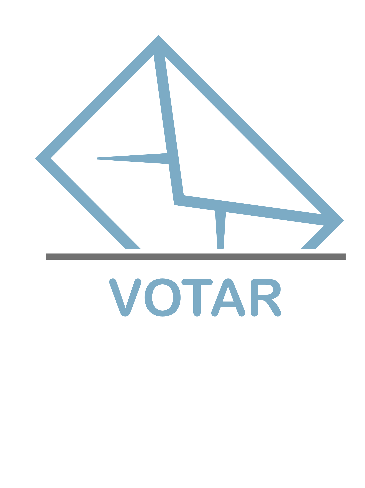

<!--
  Generated template for the LoginPage page.

  See http://ionicframework.com/docs/components/#navigation for more info on
  Ionic pages and navigation.
-->


<ion-content padding>


    <ion-list>
        
        <ion-item>
            <ion-label>Usuario</ion-label>
            <ion-input type="text"></ion-input>
        </ion-item>

        <ion-item>
            <ion-label>Contraseña</ion-label>
            <ion-input type="password"></ion-input>
        </ion-item>

    </ion-list>

    <div padding>
        <button ion-button block (click)="Ingresar()">Ingresar</button>
    </div>

</ion-content> 